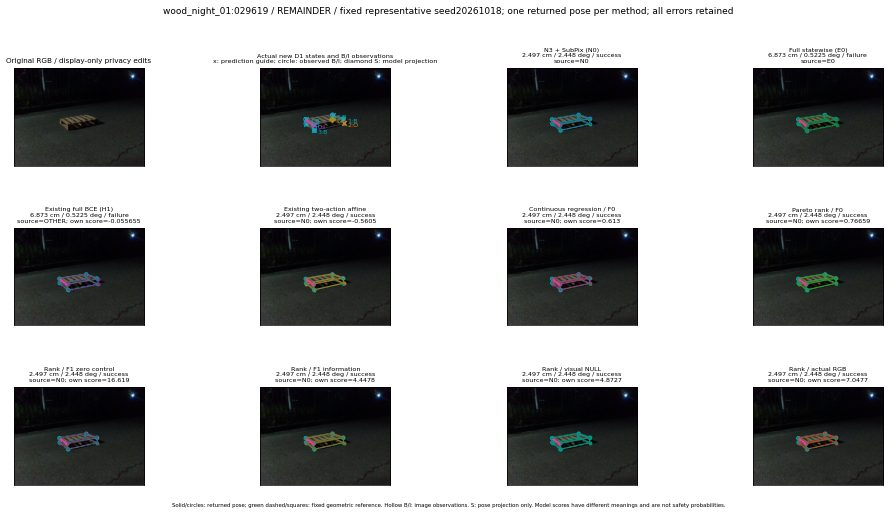

실선은 반환 자세, 초록 점선은 고정 기하 참조입니다. S는 영상 관측이 아닙니다. 점수는 모델별 의미가 다르며 보정된 안전 확률이 아닙니다. 개인정보 처리는 표시 사본에만 적용했습니다.
| 방법·seed | 위치 / 회전 / 공동성공 | 실제 출처 | 선택 후보 | 각 모델 자체 점수 |
|---|---|---|---|---|
| N0 | 2.497 cm / 2.448 deg / success | N0 | N/A | N/A |
| E0 | 6.873 cm / 0.5225 deg / failure | E0 | N/A | N/A |
| E0_REGENERATED | 6.873 cm / 0.5225 deg / failure | E0 | E0_REGENERATED | N/A |
| POSEFIX_SUBPIX_PF_ANCHOR | 2.251 cm / 1.982 deg / success | OTHER | N/A | N/A |
| POSEFIX_SUBPIX_YOLO_ANCHOR | 2.251 cm / 1.982 deg / success | OTHER | N/A | N/A |
| D1_H1_MLP_s20261018 | 6.873 cm / 0.5225 deg / failure | OTHER | G13/ORIGINAL_WD/endpoint/37 | -0.05565503239631653 |
| D1_H1_MLP_s20261019 | 6.873 cm / 0.5225 deg / failure | OTHER | G13/ORIGINAL_WD/endpoint/37 | -0.23342595994472504 |
| D1_H1_MLP_s20261020 | 6.873 cm / 0.5225 deg / failure | OTHER | G13/ORIGINAL_WD/endpoint/37 | -0.564935564994812 |
| D1_H1_PAIR_MLP_s20261018 | 2.497 cm / 2.448 deg / success | N0 | N0 | -1.2197237014770508 |
| D1_H1_PAIR_MLP_s20261019 | 2.497 cm / 2.448 deg / success | N0 | N0 | -1.1381056308746338 |
| D1_H1_PAIR_MLP_s20261020 | 2.497 cm / 2.448 deg / success | N0 | N0 | -0.863534688949585 |
| D1_H1_PAIR_ROLE_AFFINE_s20261018 | 2.497 cm / 2.448 deg / success | N0 | N0 | -0.5605031847953796 |
| D1_H1_PAIR_ROLE_AFFINE_s20261019 | 2.497 cm / 2.448 deg / success | N0 | N0 | -0.6424214243888855 |
| D1_H1_PAIR_ROLE_AFFINE_s20261020 | 2.497 cm / 2.448 deg / success | N0 | N0 | -0.42804989218711853 |
| R_CONT_F0_s20261018 | 2.497 cm / 2.448 deg / success | N0 | N0 | 0.6130003929138184 |
| R_CONT_F0_s20261019 | 6.873 cm / 0.5225 deg / failure | OTHER | G13/ORIGINAL_WD/endpoint/37 | 0.6763826012611389 |
| R_CONT_F0_s20261020 | 6.873 cm / 0.5225 deg / failure | OTHER | G13/ORIGINAL_WD/endpoint/37 | 0.7337599396705627 |
| R_ORDER_F0_s20261018 | 2.497 cm / 2.448 deg / success | N0 | N0 | 0.7665906548500061 |
| R_ORDER_F0_s20261019 | 2.497 cm / 2.448 deg / success | N0 | N0 | 1.7075681686401367 |
| R_ORDER_F0_s20261020 | 2.497 cm / 2.448 deg / success | N0 | N0 | 2.6078460216522217 |
| R_ORDER_F1_ZERO_s20261018 | 2.497 cm / 2.448 deg / success | N0 | N0 | 16.61925506591797 |
| R_ORDER_F1_ZERO_s20261019 | 2.497 cm / 2.448 deg / success | N0 | N0 | 3.5156326293945312 |
| R_ORDER_F1_ZERO_s20261020 | 2.497 cm / 2.448 deg / success | N0 | N0 | 7.886237144470215 |
| R_ORDER_F1_s20261018 | 2.497 cm / 2.448 deg / success | N0 | N0 | 4.447798728942871 |
| R_ORDER_F1_s20261019 | 2.497 cm / 2.448 deg / success | N0 | N0 | 7.728236675262451 |
| R_ORDER_F1_s20261020 | 2.497 cm / 2.448 deg / success | N0 | N0 | 2.8601038455963135 |
| V_ORDER_NULL_s20261018 | 2.497 cm / 2.448 deg / success | N0 | N0 | 4.872722148895264 |
| V_ORDER_NULL_s20261019 | 2.497 cm / 2.448 deg / success | N0 | N0 | 2.8103957176208496 |
| V_ORDER_NULL_s20261020 | 2.497 cm / 2.448 deg / success | N0 | N0 | 2.4715230464935303 |
| V_ORDER_RGB_s20261018 | 2.497 cm / 2.448 deg / success | N0 | N0 | 7.047658920288086 |
| V_ORDER_RGB_s20261019 | 2.497 cm / 2.448 deg / success | N0 | N0 | 2.144221305847168 |
| V_ORDER_RGB_s20261020 | 2.497 cm / 2.448 deg / success | N0 | N0 | -7.733695983886719 |